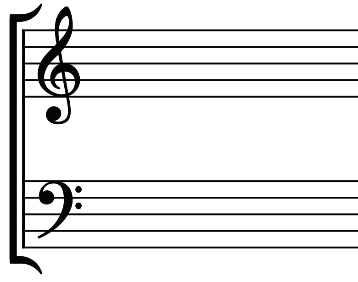
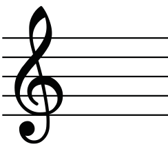
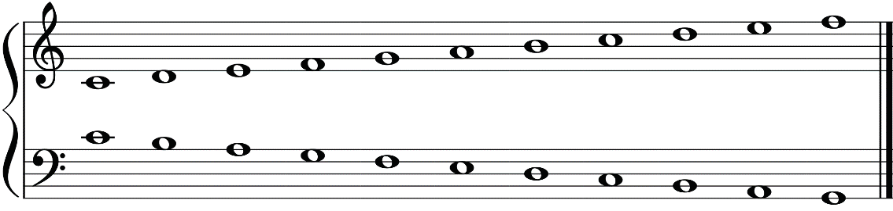
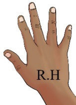
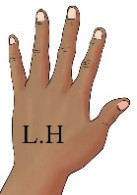

A bracket, as shown in Figure 2.2, connects the treble and bass staffs when the grand staff is used to notate music for a vocal ensemble or a choir.

Note that a single staff has no vertical line at the beginning. It is only the grand staff which has a vertical line at the beginning. Figure 2.3 shows a single staff without a line at the beginning.

When music is written on a grand staff for piano, the player uses the right hand to play notes written on the treble staff and the left hand to play notes written on the bass staff as shown in Figure 2.4.



When music is written for a vocal ensemble or a choir, soprano and alto voices are normally written on the treble staff while tenor and bass voices are normally written on the bass staff. Figure 2.5 shows the four voices written on the grand staff.